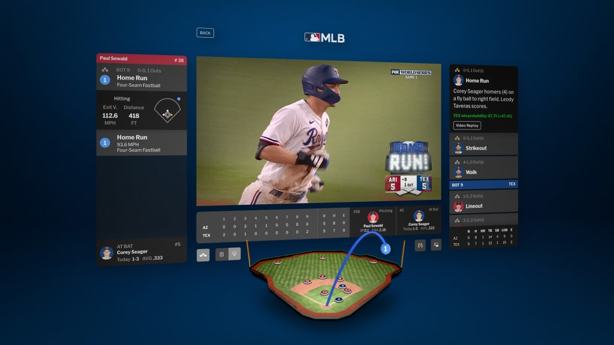

MLB ON APPLE VISION PRO
Spatial Computing & Live Data
My Work
I developed real-time spatial visualization systems for Apple Vision Pro, ingesting MLB StatCast data and presenting live baseball events in three-dimensional space.
I scripted and optimized spatial user interfaces for navigating baseball content and live game data.
I also authored contextual asset-loading systems that adapted the experience to each user's viewing preferences.